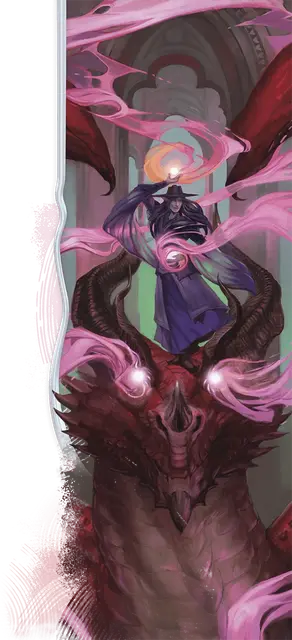

Иллюзорный дракон
Illusory Dragon
8 уровень, Иллюзия

Время сотворения 1 действие
Дистанция 120 футов
Компоненты С
Длительность Концентрация, вплоть до 1 минуты
Классы Волшебник
Собирая нити теневой материи в Царстве Теней, вы создаёте Огромного теневого дракона в свободном пространстве, которое вы можете видеть в пределах дистанции. Иллюзия существует всю длительность заклинания и занимает своё пространство, как если бы это было существо.
Когда иллюзия появляется, каждый враг, который может её видеть, должен преуспеть в спасброске Мудрости, иначе становится испуганным этой иллюзией на 1 минуту. Если испуганное существо оканчивает свой ход в том месте, где у него нет прямой видимости иллюзии, оно может повторить спасбросок, оканчивая на себе эффект при успехе.
В свой ход вы можете бонусным действием переместить иллюзию на 60 футов. В любой момент во время её движения вы можете заставить её извергнуть поток энергии в 60-футовом конусе, исходящем от неё. Когда вы создаёте дракона, выберите вид урона: кислота, некротическая энергия, огонь, холод, электричество, или яд. Каждое существо в конусе должно совершить спасбросок Интеллекта, получая 7к6 выбранного вида урона при провале или половину этого урона при успехе.
Иллюзия осязаема из-за теневого материала, используемого при её создании, но атаки по ней проваливаются автоматически, она преуспевает во всех спасбросках и имеет иммунитет к любым урону и состояниям. Существо, которое действием изучает дракона, может определить, что это иллюзия, совершив проверку Интеллекта (Расследование) против Сл спасброска от ваших заклинаний. Если существо распознаёт иллюзию, оно может видеть сквозь неё и совершает с преимуществом спасброски от её дыхания.